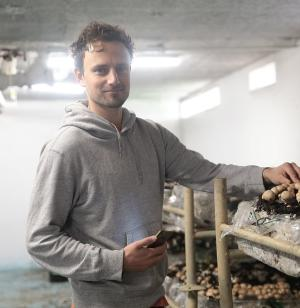

La cave agricole

Producteur de champignons, endives et micro-pousses élevées en confinement
-
coordinateur.rice :
- Sonia
- Julie
- champignons
- Adresse : Floirac Dravemont
- Site : https://www.facebook.com/lacaveagricole
- Commande : https://cagette.gourmandignes.org/contract/view/80
- contrat(s) :
Société de production basée dans le quartier de Dravemont à Floirac.
- champignons
- bio
- endives
- légumes